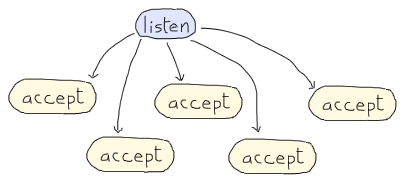

Mais do que um framework bonitinho

Tornado é um framework web non-blocking, escrito para lidar com milhares de conexões simultâneamente.
E que mais?
- URL Spec
- Template
- Locale
- Request Handler
- HTTP Server
import tornado.ioloop
import tornado.web
class MainHandler(tornado.web.RequestHandler):
def get(self):
self.write("Hello, world")
if __name__ == "__main__":
application = tornado.web.Application([
(r"/", MainHandler),
])
application.listen(8888)
tornado.ioloop.IOLoop.instance().start()
mas é só isso?
- não...
background
O que você sabe sobre:
- Non-blocking I/O?
- Callback pass style?
non-blocking I/O
É um forma de processamento de entrada/saída (input/output) que não bloqueia o processo, permitindo executar outras coisas em paralelo.
Operações de entrada e saída, como leitura e escrita, podem ser extremamente lentas em comparação com o processamento.
Por exemplo, durante uma operação de disco que leve 10 milisegundos para ser realizada, um processador de 1 gigahertz pode processar até 10milhões de instruções.
non-blocking I/O
Typical flow of the synchronous blocking I/O model
asynchronous I/O
Typical flow of the asynchronous non-blocking I/O model
non-blocking I/O
Everything in unix is a file descriptorincluindo:
- sockets
- connections
sockets operations
client

server

synchronous accept

asynchronous accept

callback passing style
def start(foo):
# do stuff with foo and when donw call the next function
stuff(callback=next_step, data=foo);
def next_step(bar):
# call more_stuff to parse bar
more_stuff(callback=last_step, data=bar)
def last_step(baz):
# senf the response
send_response(baz)
#let our handler know we are done
finish()
IOLoop
An I/O event loop for non-blocking sockets.
- core da camada de rede do tornado
- rápido e fácil de usar
- uma instância por processo
- cross-plataforma
- código aberto
- client libraries & server applications
IOLoop
import errno
import functools
import ioloop
import socket
def connection_ready(sock, fd, events):
while True:
try:
connection, address = sock.accept()
except socket.error, e:
if e.args[0] not in (errno.EWOULDBLOCK, errno.EAGAIN):
raise
return
connection.setblocking(0)
handle_connection(connection, address)
sock = socket.socket(socket.AF_INET, socket.SOCK_STREAM, 0)
sock.setsockopt(socket.SOL_SOCKET, socket.SO_REUSEADDR, 1)
sock.setblocking(0)
sock.bind(("", port))
sock.listen(128)
io_loop = ioloop.IOLoop.instance()
callback = functools.partial(connection_ready, sock)
io_loop.add_handler(sock.fileno(), callback, io_loop.READ)
io_loop.start()
IOStream
Utility classes to write to and read from non-blocking files and sockets.
- faz todo o "trabalho sujo" para você
- também usado em client & server
IOStream: a very simple HTTP client
from tornado import ioloop
from tornado import iostream
import socket
def send_request():
stream.write("GET / HTTP/1.0\r\nHost: friendfeed.com\r\n\r\n")
stream.read_until("\r\n\r\n", on_headers)
def on_headers(data):
headers = {}
for line in data.split("\r\n"):
parts = line.split(":")
if len(parts) == 2:
headers[parts[0].strip()] = parts[1].strip()
stream.read_bytes(int(headers["Content-Length"]), on_body)
def on_body(data):
print data
stream.close()
ioloop.IOLoop.instance().stop()
s = socket.socket(socket.AF_INET, socket.SOCK_STREAM, 0)
stream = iostream.IOStream(s)
stream.connect(("friendfeed.com", 80), send_request)
ioloop.IOLoop.instance().start()
tornado.stack_context
permite preservar o estado atual para ser usado em um outro contexto de execução
@contextlib.contextmanager
def die_on_error():
try:
yield
except Exception:
logging.error("exception in asynchronous operation",exc_info=True)
sys.exit(1)
with StackContext(die_on_error):
# Any exception thrown here *or in callback and its desendents*
# will cause the process to exit instead of spinning endlessly
# in the ioloop.
http_client.fetch(url, callback)
ioloop.start()
tornado.gen
Não curtiu o 'callback passing style'?
class AsyncHandler(RequestHandler):
@asynchronous
def get(self):
http_client = AsyncHTTPClient()
http_client.fetch("http://example.com",
callback=self.on_fetch)
def on_fetch(self, response):
do_something_with_response(response)
self.render("template.html")
tornado.gen
Existe uma forma mais 'pythonica' de fazer isso...
class GenAsyncHandler(RequestHandler):
@asynchronous
@gen.engine
def get(self):
http_client = AsyncHTTPClient()
response = yield gen.Task(http_client.fetch,
"http://example.com")
do_something_with_response(response)
self.render("template.html")
timers
executar um callback na próxima iteração, ou após algum intervalo
- ioloop.add_timeout(deadline, callback)
- ioloop.remove_timeout(timeout)
- ioloop.add_callback(callback)
tornado.httpclient.AsyncHTTPClient
An non-blocking HTTP client.
import ioloop
def handle_request(response):
if response.error:
print "Error:", response.error
else:
print response.body
ioloop.IOLoop.instance().stop()
http_client = httpclient.AsyncHTTPClient()
http_client.fetch("http://www.google.com/", handle_request)
ioloop.IOLoop.instance().start()
tornado.platform.twisted
This module contains a Twisted reactor build on the Tornado IOLoop
import tornado.platform.twisted
tornado.platform.twisted.install()
from twisted.internet import reactor
tornado.websocket
WebSockets allow for bidirectional communication between the browser and server.
class EchoWebSocket(websocket.WebSocketHandler):
def open(self):
print "WebSocket opened"
def on_message(self, message):
self.write_message(u"You said: " + message)
def on_close(self):
print "WebSocket closed"
tornado.netutil.TCPServer
A non-blocking, single-threaded TCP server.
from tornado import ioloop
from tornado import netutil
class EchoServer(netutil.TCPServer):
def handle_stream(self, stream, address):
self._stream = stream
self._read_line()
def _read_line(self):
self._stream.read_until('\n', self._handle_read)
def _handle_read(self, data_in):
self._stream.write('You sent: %s' % data_in)
self._read_line()
if __name__ == '__main__':
server = EchoServer()
server.listen(2007)
ioloop.IOLoop.instance().start())
Mais do que um framework bonitinho
referências
- http://en.wikipedia.org/wiki/Asynchronous_I/O
- http://www.kegel.com/dkftpbench/nonblocking.html
- http://www.kernel.org/doc/man-pages/online/pages/man4/epoll.4.html
- http://scotdoyle.com/python-epoll-howto.html
- http://docs.python.org/2/library/select.html
- http://www.tornadoweb.org/documentation/index.html
- http://dabeaz.com/coroutines/Coroutines.pdf